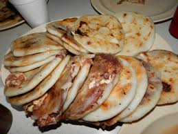
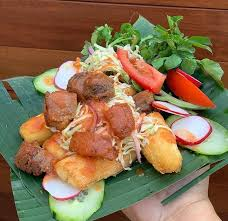
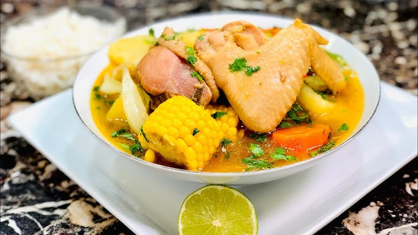

Pupusas, yuca frita y caldos tradicionales.

Pupusas
Plato típico
Ingredientes
- 2 tazas de harina de maíz
- 1 1/2 tazas de agua tibia
- Quesillo o queso mozzarella
- Frijoles refritos o chicharrón molido
- Sal y aceite
Pasos
- Mezclar la harina, el agua y la sal hasta obtener una masa suave que no se agriete.
- Formar una bola, abrir un hueco en el centro y colocar el relleno.
- Cerrar la masa y aplanarla con cuidado hasta formar un disco.
- Cocinar en un comal ligeramente engrasado hasta dorar ambos lados; servir con curtido y salsa.

Yuca frita con chicharrón
Entrada
Ingredientes
- 1 kg de yuca pelada
- 500 g de chicharrón
- Aceite para freír
- Sal al gusto
- Curtido y salsa de tomate
Pasos
- Cortar la yuca y cocerla en agua con sal hasta que esté tierna, sin deshacerse.
- Escurrirla, dejarla secar y retirar la fibra central.
- Freír los trozos en aceite caliente hasta que estén dorados y crujientes.
- Servir con chicharrón, curtido y salsa de tomate.

Sopa de gallina india
Sopa
Ingredientes
- 1 gallina india en presas
- Papas, zanahoria y güisquil
- Elote y yuca
- Cebolla, ajo y tomate
- Cilantro, hierbabuena, sal y agua
Pasos
- Poner la gallina en una olla con agua, cebolla, ajo y sal; cocinar hasta que comience a ablandarse.
- Añadir el elote y la yuca y continuar la cocción a fuego medio.
- Agregar papa, zanahoria, güisquil y tomate; cocinar hasta que todo esté tierno.
- Incorporar cilantro y hierbabuena, ajustar la sal y servir caliente.